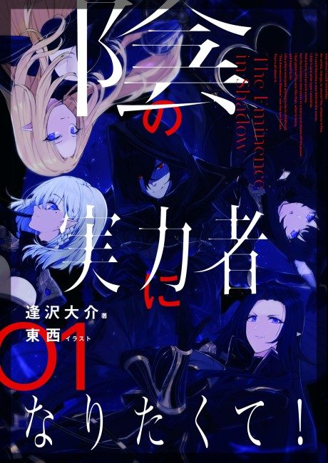

The Eminence in Shadow
陰の実力者になりたくて！
After the anime, read the light novel from Volume 5.
8.1AniList score
—Animeter, no votes yet
32episodes, 2 seasons
2 seasons, 32 episodes
In airing order. Episode numbers on this site count straight through every season, so season 2 starts at episode 21.
1
2022 · TV
The Eminence in Shadow
Episodes1–2020 ep
2
2023 · TV
The Eminence in Shadow Season 2
Episodes21–3212 ep
Sources: AniList